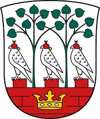
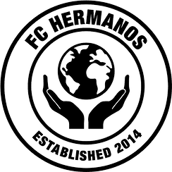
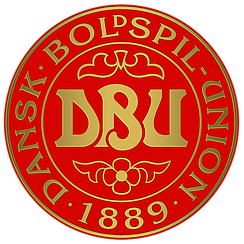
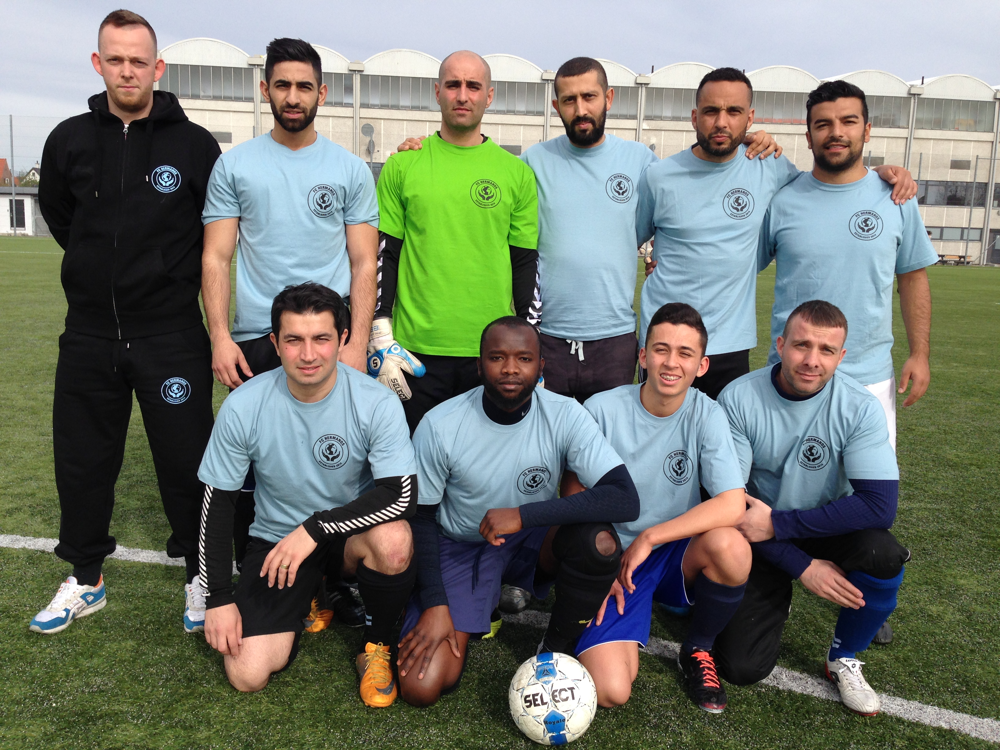

November 2014
HISTORIE - DER VAR EN GANG...
Et uhyggeligt vejr rasede over Jyllands vestkyst. Stormen hylede om hjørnerne i den lille fiskerflække og slog mod ruderne med en voldsomhed, som man ikke havde kendt i mands minde. Men det kommer forresten ikke vor historie ved, for den foregår slet ikke i Jylland, men i København - nærmere bestemt på Frederiksberg. Her var det et strålende sommervejr. Det var en af de sommeraftener, hvor alt er stille, og hvor ingen vind rører sig. Skæbnen ville have, at to unge mænd ved navn Casper Abdulrahman Bjaarnø & Isa Phillip Manneh Andersen, mødtes på en café for at lære hinanden at kende.
De to trosfæller var sammen nået frem til en erkendelse af, at de mange timer på de store fodboldbanerne rundt om i verdenen, havde givet deres kropslige legemer mange skavanker. Tanken om at skulle stoppe med at spille fodbold, havde dog alligevel aldrig strejfet dem. Derfor besluttede de at prøve kræfter med syvmands fodbold.
November 6 2014
FC HERMANOS
Venskaber mødes fra alle verdenshjørner. I FC HERMANOS, der på spansk betyder brødre, er trosfælleskab og kulturel mangfoldighed en grundlæggende værdi. Da visionen og ideerne for foreningen var blevet en realitet, blev der på den stiftende generalforsamling den 6. november 2014 vedtaget følgende formål:
At give medlemmerne adgang til under de bedst mulige vilkår at spille fodbold samt at fremme interessen for dette spil for den multikulturelle ungdoms vedkommende i særdeleshed og for voksne i almindelighed. Det tillægges herved særlig betydning, at børn og unge under 25 år får mulighed for aktivitet og kammeratligt samvær med jævnaldrende i deres fritid. Herunder at fremme sundhed og ernæring, samt tilbyde lektiehjælp. Desuden at drive eventuelle sideaktiviteter som bestyrelsen måtte finde egnede til at indgå i driften af foreningen.
Januar 1 2015
GODKENDT FORENING I FREDERIKSBERG KOMMUNE
Med den vedtaget idé og et grundlag for foreningen, blev FC Hermanos den 1. januar 2015 godkendt, som folkeoplysende forening, i Frederiksberg Kommune.
LOGO
Ideerne bag foreningens logo er, at globusen symboliserer fodbolden, og at foreningens medlemmers kulturelle baggrunde kommer fra hele verden. De to hænder symboliserer en bøn for en mangfoldig verden. Foreningens logo blev designet af den verdens kendte grafiker Dan Bjaarnø.
April 19 2015
OPTAGELSE I DBU
Da grundlaget for foreningen var på plads, søgte bestyrelsen om optagelse i DBU København i 7M Herre række 4. Klubben fik til at starte med hjemmebane i Valby Idrætspark. Første kamp i klubbens historie blev spillet den 19. april 2015 kl. 16.45, på udebane i Vanløse Idrætspark mod Vanløse, som blev besejret 13-1. Holdet i debuten: Holdansvarlig: Casper A. Bjaarnø - Spillere: Mohammed Fayes Al-Ghazali - Gøkhan Gürcan - Sofian Benamar - Abdullah El Khomsi - Behzad "El Magico" - Ercan Gürcan - Mohammadu Lamin - Nabil El Khomsi - Yousef Storm

Første holdfoto i FC Hermanos historie
November 6 2015
OPRYKNING I FØRSTE SÆSON
Det skulle hurtigt vise sig, at de unge mænd fra Frederiksberg, ikke havde tænkt sig at blive i DBUs lavest placeret række. FC Hermanos spillede den 10. juni 2015 kl. 19:00 på udebane i Lersøparken mod Bispebjerg BK. Holdet var bagud med 2-0, men viste viljestyrke. På et hovedstødsmål scoret af Mohammed El Kharraj, langt inde i kampens døende minutter, endte kampen 2-2, og oprykningen var dermed sikret.
Maj 11 2015
FØRSTE STORSPONSOR
FC Hermanos skrev den 11. maj 2015 under på klubbens første sponsor. Tømrermester Peter Søndergaard, der sørgede for at holdet fik flot nyt tøj, til sæsonen i efteråret 2015. Bestyrelsen er meget taknemmelige for aftalen.

September 8 2015
OPRYKNING I ANDEN SÆSON
Første kamp i den nye række 3, blev spillet den 8. september 2015 på hjemmebane i Valby Idrætspark mod Amager FF. Kampen blev vundet med 4-2. Dette blev startskudet til en forrygende sæson, hvor FC Hermanos fløj igennem rækken ubesejret.
Oktober 14 2015
MEDLEM AF FREDERIKSBERGS IDRÆTS UNION
Den 14. oktober 2015 godkendes FC Hermanos ansøgning, om optagelse i Frederiksbergs Idræts Union. Med optagelsen i FIU, får FC Hermanos derfor sæde i brugergruppen i Frederiksberg-Hallerne, da foreningens hjemmebane, nu er at finde på banerne ved Frederiksberg-Hallerne. Udover at have flyttet hjemmebanen fra Valby til Frederiksberg, giver optagelsen i unionen også FC Hermanos en plads i FIU's Fodboldudvalg.